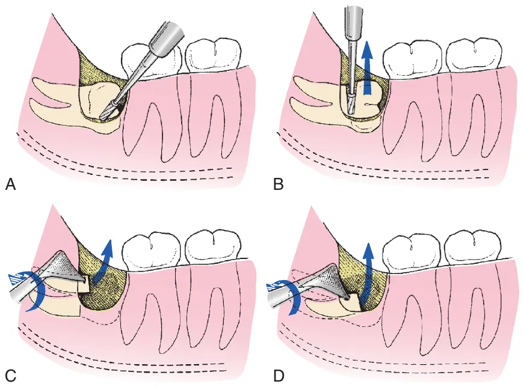
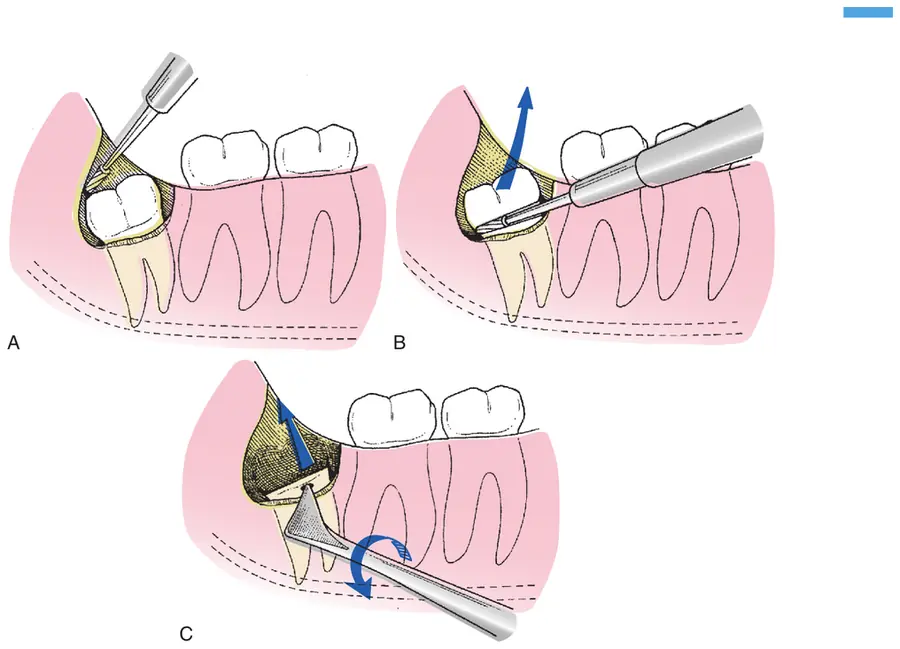

نسخه استخراجشده؛ ترجمه یا تأیید علمی انجام نشده است. وضعیت: captured
سهولت برداشتن یک دندان نهفته به دسترسیپذیریاش بستگی دارد. برای دسترسی به ناحیه و دیدن استخوانی که باید برداشته شود، جراح باید یک فلپ موکوپریوستیل کافی رفلکت کند — با ابعادی که اجازهی گذاشتن و تثبیت رترکتورها و ابزار برداشت استخوان را بدهد.

کدام فلپ؟ در بیشتر موقعیتها فلپ پاکتی تکنیک ارجح است: سریعتر بخیه میشود و بهتر از فلپ سهگوش (فلپ پاکتی با یک برش رهاساز) التیام مییابد. ولی اگر جراح دسترسی بیشتری به نواحی آپیکالتر دندان لازم داشته باشد — دسترسیای که ممکن است فلپ پاکتی را بکشد و پاره کند — باید فلپ سهگوش را در نظر بگیرد.
برش ارجح در مندیبل — یک برش پاکتی که از پاپیلای مزیال مولر اول مندیبل شروع میشود، دور گردن دندانها میرود، تا زاویهی خط دیستوباکال مولر دوم، و سپس به سمت خلف و بهطور جانبی بالای مرز قدامی راموس مندیبل امتداد مییابد.
و حالا مهمترین هشدار این درس: برش نباید در یک خط مستقیم به سمت خلف ادامه یابد، چون مندیبل در ناحیهی مولر سوم بهطور جانبی واگرا میشود. برشی که مستقیم به سمت خلف امتداد یابد، از روی استخوان میافتد و وارد فضای سابلینگوال میشود و میتواند به عصب لینگوال آسیب بزند — عصبی که در ناحیهی مولر سوم به مندیبل نزدیک است. اگر این عصب تروما ببیند، بیمار احتمالاً بیحسی عصب لینگوال خواهد داشت، که برای بیماران بهشدت آزاردهنده است.
پس قاعدهی طلایی: برش باید همیشه روی استخوان نگه داشته شود؛ بنابراین جراح باید پیش از شروع برش، ناحیهی رترومولار را با دقت لمس کند.
فلپ بهطور جانبی رفلکت میشود تا ریج مایل خارجی با یک الواتور پریوستیل اکسپوز شود.

و یک حد که نباید از آن گذشت: جراح نباید بیش از چند میلیمتر فراتر از ریج مایل خارجی رفلکت کند، چون این کار به موربیدیتی بیشتر و تعداد بیشتر عوارض پس از جراحی میانجامد.
جای رترکتور: روی شلف باکال، درست جانبِ ریج مایل خارجی گذاشته میشود، و با اعمال فشار به سمت استخوان تثبیت میشود. نتیجه رترکتوری است که پایدار است و مدام به بافت نرم تروما نمیزند. رترکتورهای آستین و مینهسوتا رایجترین رترکتورها برای رترکشن فلپ در برداشتن مولر سوم مندیبلاند.
اگر نهفته عمیق باشد: اگر مولر سوم نهفته عمیقاً در استخوان جاسازی شده و برداشت استخوان گستردهتری میطلبد، یک برش رهاساز مایل و عمودی میتواند سودمند باشد. فلپ ساختهشده با این برش میتواند بدون خطر پاره شدن بافت، آپیکالتر رفلکت شود.
برش توصیهشده برای مولر سوم ماگزیلا هم یک برش پاکتی است: برش از سطح دیستال مولر دوم به سمت خلف روی توبروزیته و به سمت قدام تا سطح مزیال مولر اول امتداد مییابد. در موقعیتهایی که دسترسی بیشتری لازم است — مثلاً در نهفتگی عمیقاً جاسازیشده — یک برش رهاساز از سطح مزیال مولر دوم میتواند به کار رود.
و پنج قاعدهی طراحی فلپ در برداشتن مولر سوم:
وقتی بافت نرم بلند و رترکت شد تا میدان جراحی دیده شود، جراح باید دربارهی مقدار استخوانی که باید برداشته شود قضاوت کند. در بعضی موقعیتها دندان میتواند با بور سکشن شود و بدون برداشت استخوان تحویل شود؛ ولی در بیشتر موارد مقداری برداشت استخوان لازم است.
کدام سطوح، تا کجا: استخوان روی سطح اکلوزال و روی سطوح باکال و دیستال، تا خط سرویکال دندان نهفته، باید در ابتدا برداشته شود. مقدار استخوانی که باید برداشته شود با عمق نهفتگی، مورفولوژی ریشهها، و زاویهی دندان تغییر میکند.
و قاعدهای که هرگز شکسته نمیشود: استخوان نباید از سطح لینگوال مندیبل برداشته شود — هم به دلیل احتمال آسیب به عصب لینگوال، و هم چون غیرضروری است.
کدام بور؟ بورهایی که برای برداشتن استخوان روی نهفته به کار میروند با ترجیح جراحان فرق میکنند:
و یک ممنوعیت مطلق: هندپیس دندانی — از آن نوع که در دندانپزشکی ترمیمی به کار میرود — هرگز نباید برای برداشتن استخوان اطراف مولرهای سوم یا سکشن کردن آنها به کار رود.
توالی معمول در مندیبل: ابتدا استخوان سطح اکلوزال برداشته میشود تا تاج دندان اکسپوز شود، سپس استخوان کورتیکال سطح باکال تا خط سرویکال برداشته میشود، بعد بور میتواند برای برداشتن استخوان میان دندان و استخوان کورتیکال در ناحیهی اسفنجی به کار رود، با مانوری که ditching نامیده میشود.
این کار دسترسی الواتورها به purchase point و یک مسیر برای تحویل دندان فراهم میکند. هیچ استخوانی از سطح لینگوال برداشته نمیشود تا عصب لینگوال از آسیب محافظت شود.
و در ماگزیلا همه چیز سبکتر است: برای دندانهای ماگزیلا برداشت استخوان معمولاً غیرضروری است؛ ولی وقتی لازم شود، استخوان عمدتاً از سطح باکال دندان تا خط سرویکال برداشته میشود تا کل تاج بالینی اکسپوز شود. و معمولاً این برداشت با یک الواتور پریوستیل انجام میشود، نه با بور. استخوان اضافی معمولاً باید از سطح مزیال دندان برداشته شود تا الواتور ناحیهی purchase کافی برای تحویل دندان داشته باشد.